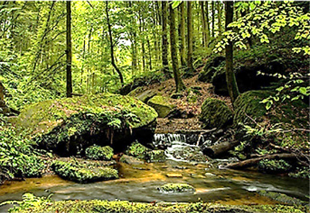

مقدمة
في هذه الوحدة، مستخدم جدول بيانات للإجابة عن الأسئلة المتعلقة بالوضع التالي:

الغابة هي نظام بيئي يمكن العثور فيه على مجموعات متنوعة من الأشجار والنباتات والحيوانات.
يمكن أن تتغير مساحة الغابات في بلد ما بمرور الوقت.
في الشاشة التالية، سوف نتعرف على استخدام جدول البيانات.